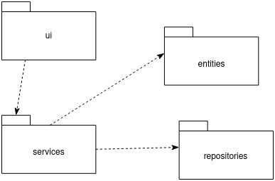
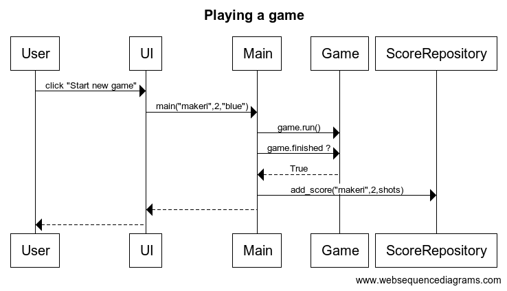

Arkkitehtuurikuvaus
Rakenne
Ohjelman rakennetta kuvaava pakkauskaavio on seuraavanlainen:

Pakkaus ui sisältää valikkoon liittyvät visuaaliset komponentit, pakkaus services sisältää sovelluslogiikasta huolehtivat komponentit, pakkaus entities taas sisältää pelin sisäiset oliot ja pakkaus repositories sisältää tiedon tallentamisesta vastuussa olevat toiminnallisuudet.
Käyttöliittymä
Peli sisältää kaksi erilaista näkymää:
- Aloitusvalikko
- Peli
Aloitusvalikosta voi asettaa itselleen nimimerkin, valita tason ja pallon värin sekä aloittaa uuden pelin. Valikko on toteutettu omana Menu -luokkanaan.
Pelinäkymässä lyödään minigolfille ominaiseen tapaan palloa reikään. Pelinäkymä rakentuu useasta luokasta, joista osa vastaa pelin logiikasta ja osa pygamen visuaalisista elementeistä. Pelin suorittamisesta vastaa pääasiassa Game -luokka, joka kutsuu muiden luokkien metodeita pelin tapahtumien perusteella.
Peliin voidaan vielä lisätä visuaalinen käyttöliittymä tulosten tarkastelua varten.
Tietojen tallentaminen
ScoreRepository -luokka huolehtii tietojen tallentamisesta SQLite-tietokantaan. Tietokantaan tallennetaan jokaisen pelatun pelin jälkeen pelaajan nimi, tulos ja kentän numero.
Tietokanta
Tietokantatiedoston nimi on määritelty .env -tiedostossa, joten sitä on tarvittaessa hyvin kätevää vaihtaa.
Tietokannassa tiedot tallennetaan scores -tauluun, joka on seuraavanlainen:
| level | player | score |
|---|---|---|
| 1 | makeri | 3 |
| 2 | makeri | 5 |
Tietokanta alustetaan initialize-db.py -tiedostossa.
Toiminnallisuudet
Pelin pelaaminen onnistuneesti
Kun aloitusvalikossa pelaaja syöttää nimimerkikseen 'makeri', valitsee tason 2 ja sinisen pallon, etenee pelin pelaaminen näin:

Kun pelaaja painaa Start new game -painiketta, kutsutaan main-funktiota annetuilla tiedoilla pelaajan nimestä, tasosta ja pallon väristä. main-funktio luo uuden Game -luokan olion, jonka sisällä luodaan pelin pelaamiseen vaadittavat oliot. Game tarkistaa jatkuvasti, onko pallo päätynyt reikään eli onko peli päättynyt. Kun peli päättyy, se kutsuu ScoreRepository -luokan metodia add_score, joka tallentaa pelin tuloksen tietokantaan. Peli palaa takaisin aloitusvalikkoon.
Kuvausta on selkeytetty jättämällä kaaviosta pois useimpien Game-luokan käyttämien olioiden luominen.